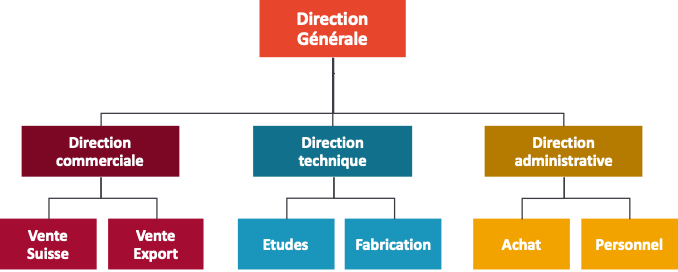
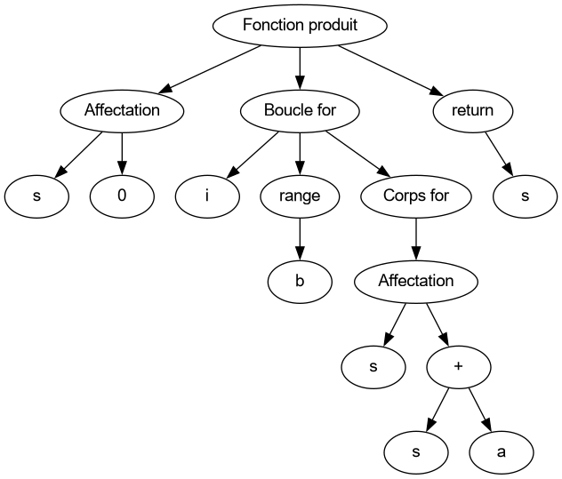
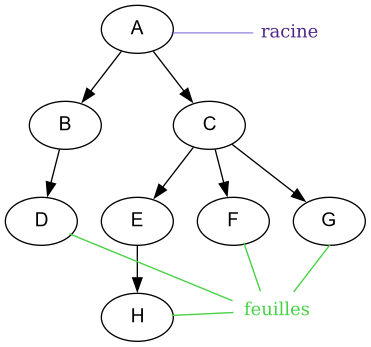
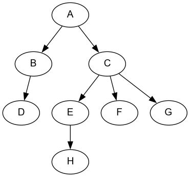
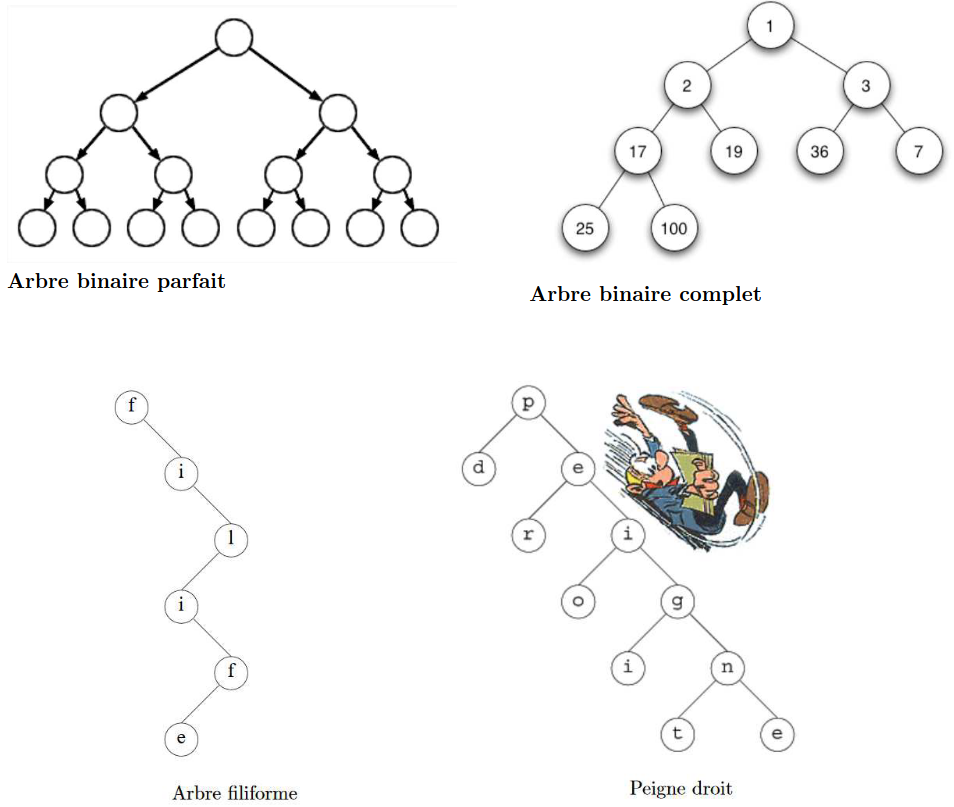

Arbres : définitions et vocabulaire
Une structure hiérarchique ?
Exemple : La hiérarchie (organigramme) d'une entreprise :

Les arbres, pour quoi faire ?
Exemple 1 : Lorsque l'interpréteur Python lit un programme, il crée d'abord un arbre syntaxique utilisant la grammaire du langage. On ne pourrait en effet pas stocker ces données dans une structure linéaire sans y perdre la structuration du programme.

Exemple 2 : Arbre d'une page HTML
<html>
<head>
<meta charset="utf-8">
<title>Ma superbe page</title>
</head>
<body>
<h1>Mon super titre</h1>
<p>Mon super paragraphe</p>
<img src="mon_image.png" alt="ma superbe image" />
</body>
<footer>
<p>Un pied de page</p>
</footer>
</html>
Exemple 3 : Arborescence des fichiers sur Linux
Source : pixees

Les arbres
Définition
Arbre : ensemble de noeuds organisés de façon hiérarchique à partir d'un noeud appelé racine.
Un arbre est une structure de données :
- hiérarchique
- naturellement récursive
Vocabulaire
- Un noeud est caractérisé par :
- une étiquette (= valeur ou clé associée au noeud) si l'arbre est étiqueté,
- un nombre fini de fils.
- Le noeud initial est appelé racine de l'arbre.
- Un noeud :
- est relié à un noeud père par une arête (parfois appelée branche) SAUF le noeud racine.
- peut avoir une ou plusieurs arêtes sortantes le reliant à ses noeuds fils.
- est appelé feuille s'il n'a pas de fils.

- chemin - deux conventions :
- suite de noeuds consécutifs de l'arbre, de longueur égale au nombre de noeuds du chemin. Sur l'arbre suivant, un chemin allant de A à H serait
[A, C, E, H](longueur du chemin : 4).
OU - suite d'arêtes consécutives de l'arbre, de longueur égale au nombre d'arêtes du chemin.
Sur l'arbre suivant, un chemin allant de A à H serait[A->C, C->E, E->H](longueur du chemin : 3).
- suite de noeuds consécutifs de l'arbre, de longueur égale au nombre de noeuds du chemin. Sur l'arbre suivant, un chemin allant de A à H serait

Quelques mesures sur les arbres
-
taille d'un arbre : nombre de noeuds de l’arbre
L'arbre ci-dessous a une taille de 8 (car 8 noeuds). -
profondeur d’un noeud - deux conventions :
- nombre de noeuds rencontrés pour aller de la racine jusqu'à ce noeud
Sur l'arbre ci-dessous, la profondeur du noeud H est de 4.
OU - nombre d’arêtes rencontrées pour aller de la racine jusqu'à ce noeud
Sur l'arbre ci-dessous, la profondeur du noeud H est de 3.
- nombre de noeuds rencontrés pour aller de la racine jusqu'à ce noeud
-
hauteur d’un arbre : deux conventions :
- profondeur maximale des feuilles de l’arbre (dépend de la convention choisie pour la profondeur.)
Sur l'arbre ci-dessous, la hauteur de l'arbre est la profondeur du noeud H, elle est donc de 4 ou de 3 selon la convention choisie.
- profondeur maximale des feuilles de l’arbre (dépend de la convention choisie pour la profondeur.)
-
arité/degré d’un noeud : nombre de fils du noeud.
-
arité/degré d’un arbre : nombre maximal de fils des noeuds de l’arbre.

Les arbres binaires
Définition : Un arbre binaire est un arbre dont chaque noeud comporte au plus deux fils.
Un arbre binaire est :
- soit un arbre vide, qui ne contient aucun noeud.
- soit un arbre dont les noeuds sont structurés de la manière suivante :
- un noeud est appelé la racine de l'arbre,
- les noeuds restants sont séparés en deux ensembles qui forment récursivement deux sous-arbres, le sous-arbre gauche et le sous-arbre droit,
- la racine de l'arbre est reliée à la racine du sous-arbre gauche et à la racine du sous-arbre droit.

Arbres binaires particuliers
Source : http://pascal.delahaye1.free.fr/cpge/informatique/cours%20projetes/cp08.pdf

-
Un arbre binaire filiforme (ou dégénéré) est un arbre dans lequel tous les noeuds internes n’ont qu’un seul fils. (Un arbre filiforme ne possède donc qu’une seule feuille.)
-
Un arbre binaire localement complet (ou arbre binaire strict) est un arbre binaire dont tous les noeuds internes possèdent exactement zéro ou deux fils (l'arbre vide n'est pas localement complet).
-
Un peigne gauche (respectivement peigne droit) est un arbre binaire localement complet dans lequel tout fils droit (respectivement gauche) est une feuille.
-
Un arbre binaire parfait est un arbre binaire localement complet dans lequel tous les niveaux sont remplis (toutes les feuilles sont à la même profondeur).
-
Un arbre binaire complet (ou presque complet) est un arbre binaire dans lequel tous les niveaux sont remplis à l’exception éventuelle du dernier, auquel cas les feuilles du dernier niveau sont alignées à gauche.
-
Un arbre binaire équilibré est un arbre binaire tel que pour chaque noeud, le sous-arbre gauche et le sous-arbre droit ont une hauteur qui ne diffère que de 1 au plus.
Relations entre taille n et hauteur h
Encadrement avec une profondeur 0 pour la racine :
À chaque niveau de l'arbre, le nombre de noeuds \(n\) est de \(n = 2^{niveau}\), il en découle :
- Pour une taille n donnée : \(\lfloor log_{2}(n) \rfloor \leq h \leq n-1\)
- h min lorsque arbre complet, h max lorsque arbre filiforme
- exemple si \(n=12\) : \(3 \leq h \leq 11\)
- Pour une hauteur h donnée : \(h+1 \leq n \leq 2^{h+1}-1\)
- n min lorsque arbre filiforme, n max lorsque arbre parfait
- exemple si \(h=5\) : \(6 \leq h \leq 63\)
Encadrement avec une profondeur 1 pour la racine :
À chaque niveau de l'arbre, le nombre de noeuds \(n\) est de \(n = 2^{niveau-1}\), il en découle :
- Pour une taille n donnée : \(\lceil log_{2}(n+1) \rceil \leq h \leq n\)
- h min lorsque arbre complet, h max lorsque arbre filiforme
- exemple si \(n=12\) : \(4 \leq h \leq 12\)
- Pour une hauteur h donnée : \(h \leq n \leq 2^{h}-1\)
- n min lorsque arbre filiforme, n max lorsque arbre parfait
- exemple si \(h=5\) : \(5 \leq h \leq 31\)